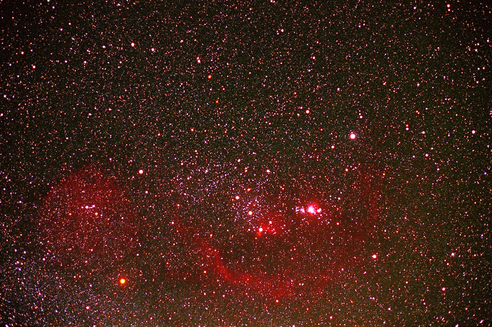

Orion and Barnard's Loop - 猎户座，巴纳德环
在上图中，位于影像中下方，有一个红色的泡泡环绕着猎户座的腰带星。这个被称为巴纳德环的泡泡很像发射星云发出的辉光，它是1895年巴纳德 (E. E. Barnard)在长时间曝光照像底片上发现的。我们也用了相同的方法拍出了上面这张照片。巴纳德环很神秘，它的成因现在也没有人解释的清楚。创生假说有猎户座亮星的恒星风，和远古发生的超新星爆炸。巴纳德环非常昏暗，用肉眼无法辨识，需要靠相机长时间曝光。影像中央紧贴在最下方腰带星右侧的红色发射星云有个小小的缺口，在高倍率的放大影像里，可以认出它就是马头星云。腰带星右方的明亮星云，则是很上镜头的著名猎户座大星云。
由于这是胶片作品，红色的星云部分体现的淋漓尽至。这也应该是天文社历史上最优秀的照片之一。相应的未移除红外滤镜的数码相机拍出来的效果就要差很多。这也是为什么后面两张都去掉了颜色的原因。颜色太难看。
拍摄参数和器材：Nikon FM3A；Kodak E-200 反转片；Total Exposure: 25min。
作者：骆进。摄于浙江省安吉县天荒坪，2006年。